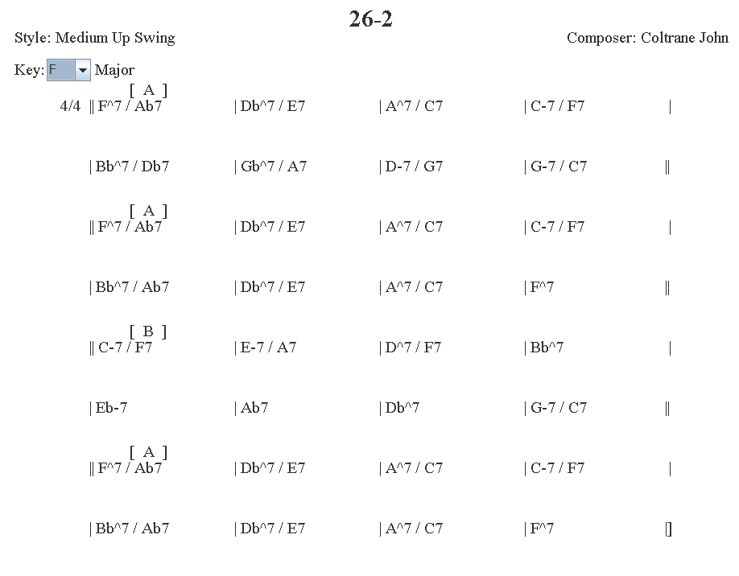

Assignment Submissions Instructions: Assignments must be submitted via culearn by the due date and time. Late assignments will not be accepted. You should submit all your code and related data files along with a detailed readme file to tell the TA how to setup and run your application.
rev3: I've removed requirement 3.14 since fermata's in music do not related directly to the chords.
rev2: added beta2 parser to demo code
rev1: added clarification about "Y" found in chart data. see table at bottom for assignment.
In this assignment we will build a web application that uses a database. We will also get more practice doing javascript string processing and node.js/express.js programming. The assignment requirements are fairly basic but you should feel free to embellish it much more if you want. This assignment is based on a real project and so we are very interested in the variety of solutions you come up with.
We want you to contribute a web application to a larger ongoing project that was started in one of our recent COMP 2404 C++ programming/C++ classes. In that course the students reverse-engineered a dataset from a popular iPad app store app currently called: iRealPro. We want to build a web application and database to both search and view this content (music song chord charts) with a browser and also allow the user to edit existing songs or contribute new song data.
In this assignment we want to pick up where the other students left off and parse their data file into a JSON mongodb database (or sqlite database if you prefer) and then write a server that will display the data for the user in the required format and also allow them to either contribute to, or modify, the data via the web pages.
Assignment Marking:
Marking: This assignment is based on 36 specific numbered design requirements numbered R1.1... R4.1 . (excluding R3.14) Two marks each and a 20 marks tutorial time demo for a total of 72+20=92 marks.We will award 2 marks for those requirements that are met and well implemented, 1 mark for those only partly met or met but poorly implmented, and 0 marks for any requirement not met. This assignment also has a show and tell demo on Tuesday Dec. 2 as part of your regular tutorial slot. At the tutorial demo we will want to see that most of the functionality has been implemented. The marking will be 20 marks for mostly done, 10 marks for about half done, 0 marks for no show or very little done.
This assignment may be done in pairs if you want to work with a partner.
In addition there are some
general programming and good practice requirements that you must satisfy. These
requirements are numbered R0.1, R0.2 .... Be prepared to lose marks if these
requirements are not satisfied. If requirement R0.0 or R0.1 is not met the assignment grade will be 0.
Good Programming and Good Practice Requirements.
The following requirements will pertain to all
your assignments regardless of what your application is supposed to do (i.e.
regardless of the design requirements). These requirements are to ensure that
your code is readable and maintainable by other programmers (or readable by TA's
in our case), and that your program adopts good practices. You will lose 5 marks from your total
assignment mark for each of the following requirements that is not
satisfied. If, however, you do not satisfy requirement R0.0 or R0.1 you will get 0
for the assignment.
R0.0) IMPORTANT Uniqueness Requirement. The solution
and code you submit MUST be unique. That is, it cannot be a copy of, or be too
similar to, someone else's code, or other code found elsewhere. A mark of 0 will
be assigned to any assignment that is judged by the instructors or the TA's not
to be unique. (You are free to use any code posted on our course web site as
part of the course notes or example code.)
R0.1) CODE ORGANIZATION AND COMPILATION: The TA's must be able to compile and run your code to evaluate it. Though you are permitted to write code on Windows 8, Linux, or Mac OS. The code should be generic enough to be OS agnostic. Nevertheless, you must provide a ReadMe.txt file that says which OS you developed on and provide any necessary instruction on how to compile and run your code.
R0.2) All of
your variables, methods, functions, and classes should have meaningful names that reflect
their purpose. Do not follow the convention common in math courses where they
say things like: "let x be the number of customers and let y be the number of
products...". Instead call your variables numberOfCustomers or numberOfProducts. Your program should not have any variables
called "x" unless there is a good reason for them to be called "x". (One
exception: It's OK to call simple for-loop counters i,j and k etc. when the
context is clear.)
R0.3) Code Comment Requirements: Comments in your code must coincide with what the code actually does. It is a very common bug in industry for people to modify code and forget to modify the comments and so you end up with comments that say one thing and code that actually does another. By the way, try not to over-comment your code but instead choose good variable names and function names that make the code more "self commenting".
R0.3) Citation Requirements: If you use code from other sources you should cite the source in comments that appear with the code. It the source is an internet website then put the URL in the comments. You may draw on code from other sources but this may not form the complete solution you are handing in.
VERY IMPORTANT: Any
sample code fragments provided may have bugs (although none are put
there intentionally). It is part of your task to identify errors in the
requirements and sample code. Please report errors so the can be fixed and an assignment
revision noted.
In a previous term the students started building a database to catalog the songs that appear in "fake books" used by musicians. Fake books have a long and colorful history. They were, in fact, one of the first real exploitations of, and pirating of, musicians and songwriters. Fake books were illegal song books sold to musicians but without royalty payments going to the authors and publishers of the songs. They were copyright violations. There was a thriving trade in illegal fake books involving organized crime mobs among others. Eventually certain publishers, notably Hal Leonard and Sher Music Co., obtained publishing rights to the songs and started publishing legal versions of the fake books, but this time called "Real books". It is estimated that most, if not all, professional musicians own an least one Fake book and the vast majority own at least one illegal copy. The story of fake books is a colorful one. To learn more about them check out "Fake books" or "Real Books" on google and wikipedia. If you are really interested in this story check out Barry Kernfeld's book: "The Story of Fake Books -Bootlegging Songs to Musicians" here. Here is the amazon description of the book -it gives you an idea of the story:
Fake books—anthologies of songs notated in a musical shorthand—have been used by countless pop and jazz musicians in both professional and amateur settings for more than half a century. The Story of Fake Books: Bootlegging Songs to Musicians traces the entertaining and previously unknown account of the origins of pop song fake books, which evolved through the bootlegging of a now obscure musical subscription service, the Tune-Dex. The book follows the history of fake books through their increased popularity among musicians to their prosecution by the government and the music industry, resulting in America's first full-blown federal trial for criminal copyright infringement. Through accounts given by jazz musicians Steve Swallow and Pat Metheny, The Story of Fake Books also reveals the definitive history of the most popular fake book, one that has acquired a legendary status among jazz musicians: an anthology of jazz tunes called The Real Book. Drawing from information in FBI files, entertainment trade papers, and federal court records, author Barry Kernfeld presents pioneering research, which brings together aspects of pop music history and copyright law to disclose this predecessor of current-day battles over pop song piracy.
iRealPro (orginally called iRealBook then iRealB) is a Apple iPad app that displays fake book chord charts in a simple format that works well on both an iPhone or iPad. Moreover, the app is able to transpose the charts and, in fact, play them by synthesizing audio tracks based on the user choosing a genre. The iReal Pro app does not ship with songs, instead they area contributed voluntarily by a user community and posted on forums. Posting and distributing chord charts is not a copyright violation. Song melodies and lyrics can be copyrighted but chord progressions cannot. Also while it is illegal to copy works of art, it is not illegal to catalog them hence building a database of fake book chord charts is not a copyright violation.
The dataset provided by the COMpP 2404 students consists of a .txt file of 1200 songs encoded in "proprietory" format. Part of this assignment is to unravel, or parse, the data file, build a database of Song objects, and provide a node.js or express.js server that can display the song data for the user in a nice chart-like format. We want the app to allow you to search for songs and either contribute new songs or edit existing songs. Very little is imposed on you in terms of code structure. This is your chance to "go for it".
Here is the starting portion of the data file 1200iRealBookJazz_rev2.txt which is called 1200 because there are 1200 songs represented in this file.(Note a smaller sample_songs.txt file is also provided for initial testing until you are ready to try an handle the full file.)
=26-2=Coltrane John=Medium Up Swing=F=n=*A[T44F^7 Ab7 |Db^7 E7 |A^7 C7 |C-7 F7 |Bb^7 Db7 |Gb^7 A7 |D-7 G7 |G-7 C7 ]*A[F^7 Ab7 |Db^7 E7 |A^7 C7 |C-7 F7 |Bb^7 Ab7 |Db^7 E7 |A^7 C7 |F^7 ]*B[C-7 F7 |E-7 A7 |D^7 F7 |Bb^7 |Eb-7 |Ab7 |Db^7 |G-7 C7 ]*A[F^7 Ab7 |Db^7 E7 |A^7 C7 |C-7 F7 |Bb^7 Ab7 |Db^7 E7 |A^7 C7 |F^7 Z=500 Miles High=Corea Chick=Bossa Nova=E-=n=[T44E-7 | x |G-7 | x |Bb^7 | x |Bh7 |E7#9 |A-7 | x |F#h7 | x |F-7 | x Q |C-7 | x |B7#9 | x Z Y{QC-7 | x |Ab^7 | x }=502 Blues=Rowles Jimmy=Waltz=A-=n={T34A-7 |Db^7 |Bh7 |E7#9 |A-7 |Db^7 |Bh7 |E7#9 |C-7 |F7b9 |Bb^7 |Ab-7 Db7 |N1F#h7 |B7b9 |E^7#5 |E^7#5 E7 } |N2F#h7 |B7b9 |E-7 | x Z=52nd Street Theme=Monk Thelonious=Up Tempo Swing=C=n={*AT44C A-7 |D-7 G7 |C A-7 |D-7 G7 |C A-7 |D-7 G7 |C G7 |C }[*BC7, | x |F6 | x |D7, | x |G7 | x ][*AC, A-7 |D-7 G7 |C A-7 |D-7 G7 |C A-7 |D-7 G7 |C G7 |C Z =9.20 Special=Warren Earl=Medium Swing=C=n={*AT44C9, |Eb-6, |C9, |Eb-6 |Bb, |sBb7,A7,Ab7,G7 |N1lC9, F#o7, |C9, sAb7,G7} |N2lC9, F#o7 |lC9, sF7,Bb][*BlBb, |Eb, Eb6 |Eb6, | x |G9, |F, F6, |F9, | F7 ][*AC9, |Eb-6, |C9, |Eb-6, |Bb, |sBb7,A7,Ab7,G7 |lC9, F#o7 , |sC6,F7,Bb,D9Z =A Felicidade=Jobim Antonio-Carlos=Bossa Nova=A-=n=*A{T44A-7(C^7) | x |C^7 | x |E-7 |B7b9 |E-7 <(Repeat Optional)>A7 |D-7 G7 }[*BC^7 | x |Bh7 |E7b9 |A-7 | x (Ab-7) |G-7 |C7 |F^7 |D-7 |A-7 |D7 |A-7 |Bh7 E7b9 |A-7 |G7 ]*C[C^7 |F7 |C^7 |x |G-7 |C7 |F^7 |x |D-7 |G7 |C^7 |x |F#h7 |B7b9 |sE-7,A7, |D-7,G7,]*D[lA-7 |A-7/G |D7/F# |D-7/F |A-7 |Bh7 E7b9 |A-7 | x Z =Ac-Cent-Tchu-Ate The Positive=Arlen Harold=Medium Swing=F=n={*AT44F^7 F+ |F6 F^7 |G-7 |C7 | |F^7 F+ |F6 F^7 |G-7 C7 |F6 C7 }[*BF6 |F7 |Bb^7 sG-7,C7, |lF6 C7 |F6 |D7b9 |G7#5 |C7 ][*AF^7 F+ |F6 F^7 |G-7 |C7 | |F^7 F+ |F6 F^7 |G-7 C7, |F6 C7 Z =Across The Valley From The Alamo=Greene Joe=Medium Swing=F=n={*AT44F^7, | x | x | x |C7, | x |N1G-7, C7, |F^7, } |N2G-7, C7, |F^7, ]Y[*BBb^7, |F^7, |Bb^7, Bb-7, |F^7, |A7, |D-7, G7, |G7, |C7, ]Y[*AF^7, | x | x | x |C7, | x |G-7, C7, |F^7 Z
Here is what the first three songs look like viewed in the iReal Pro app on the Apple iPad (screen captures). There are additional screen captures in the "images" directory associated with this assignment and more will be added if the need arises while working on the assignment.


As you can see above it is not hard to see how the datafile represents the chart. (At the bottom of this assignment is a large table that shows everything we know so far about what characters in the data file mean.)
We want your server to display chord charts as web pages for the user and have them look "similar" to those in the screen captures. What we mean by similar will be clarified in the specific requirements.
The demo code provided with this assignment and with Tutorial 08 provides a start of a parser that will break the datafile into songs with individual properties for their: title, composer, style, musical key etc. The demo parser, however, currently treats the song data as one big "chunk". We want you to complete this parsing code and break the songs up further into individual bars and add properties to those bars based on what the data means. At the bottom of this assignment is a large chart that shows what we know about what the data means. This chart was created by the students in a previous course when they were trying to figure out what the datafile represented.
Here is a sample of what a parse of the first song might look like. (It is from the provided file: sampleJSONparse.txt but be aware this was generated by hand so might have a mistake -if so please point it out so it can be corrected.)
{
title: "26-2",
composer: "John Coltrane",
musicalStyle: "Medium Up Swing",
key: "F",
bars: [
{
timeSignature: "4/4",
rehearsalLetter: "A",
leftDoubleBarLine: "true",
chords: "Fmaj7 / Ab7",
},
{
chords: "Dbmaj7 / E7",
},
{
chords: "Amaj7 / C7",
},
{
chords: "Cm7 / F7",
},
{
chords: "Bbmaj7 / Db7",
},
{
chords: "Gbmaj7 / A7",
},
{
chords: "Dm7 / G7",
},
{
rightDoubleBarLine: "true",
chords: "Gm7 / C7",
},
{
rehearsalLetter: "A",
leftDoubleBarLine: "true",
chords: "Fmaj7 / Ab7",
},
{
chords: "Dbmaj7 / E7",
},
{
chords: "Amaj7 / C7",
},
{
chords: "Cm7 / F7",
},
{
chords: "Bbmaj7 / Ab7",
},
{
chords: "Dbmaj7 / E7",
},
{
chords: "Amaj7 / C7",
},
{
rightDoubleBarLine: "true",
chords: "Fmaj7",
},
{
rehearsalLetter: "B",
leftDoubleBarLine: "true",
chords: "Cm7 / F7",
},
{
chords: "Em7 / A7",
},
{
chords: "Dmaj7 / F7",
},
{
chords: "Bbmaj7",
},
{
chords: "Ebm7",
},
{
chords: "Ab7",
},
{
chords: "Dbmaj7",
},
{
rightDoubleBarLine: "true",
chords: "Gm7 / C7",
},
{
rehearsalLetter: "A",
leftDoubleBarLine: "true",
chords: "Fmaj7 / Ab",
},
{
chords: "Dbmaj7 / E7",
},
{
chords: "Amaj7 / C7",
},
{
chords: "Cm7 / F7",
},
{
chords: "Dbmaj7 / Ab7",
},
{
chords: "Dbmaj7 / E7",
},
{
chords: "Amaj7 / C7",
},
{
finalBarLine: "true",
chords: "Fmaj7",
}
]
}
Note it is not expected that you already know what all the musical symbols mean. It is meant that you ask lots of questions in class and learn about what the data means. Programmers are rarely experts in the domain for which they are asked to write programs. They have to ask all the questions that are necessary to clarify what is required.
R1.1) Your app that parses the datafile should be either an express version 4.x application or just a plain node.js application (Don't use express 3.x).
R1.2) Your app should successfully parses the main intended data file, currently: 1200iRealBookJazz_rev2.txt but your app should be prepared to parse any file in a similar format. (A smaller sampleSongs.txt file is provided to start with as well)
R1.3) You should parse the data into song objects that have indivdual bars. Each bar should contain properties that pertain to that bar such as: the chords, bar lines, repeat symbols, first and second endings etc. The chart at the bottom of this assignment indicates what is currently known about what the data represents.
R1.4) Your parse should make distinct properites for the single and double bar lines, left and right repeat bar lines, and a final bar line.
R1.5) Your parse should add distinct properties to bars that represent first, second, third endings.
R1.6) Your parse should have a chords property per bar that contains all the chords of a particular bar. (You do not need to break the chords up any further).
R1.7) You parse should correcty identify the time signature of each song and account for the possiblity that the time signature might change during the song.
R1.8) Your parse should add attributes to bars that represent a coda, go to coda, or a del segno sign navigation symbols
R1.9) Your parse should add attributes to bars that represent rehearsal letters or (section letters as they are also called). (see table below)
R1.10) Your parse should correctly capture single measure repeats, double measure repeats, and bars that have no chords (nc in the data).
You are required to put the results of your parse in a database to be accessed by your web server. It is expected that you will be using a mongodb JSON database and the requirements are written as such. If any of you however prefer to use an SQLite database instead that would also be acceptable. If you have no previous experience with SQL databases I suggest you stick with the MongoDB JSON database.
Note you can build a separate app to parse the datafile and build the database or you can make that part of your server when it launches. I suggest building a separate app since that will probably be easier.
R1.11) Your database should be a collection of individual song objects.
R1.12) Your song objects in the database should have individual bar objects to represent each bar of the song.
R1.13) Your database should be accessible using the databases default command client e.g. mongo.exe.
When your server is launched the user should able to access the chart data by visiting http://localhost:3000. The user should be presented with a screen where they can search for songs according to the following requirements.
R2.1) Your chart display server should be either an Express.js version 4.x application or a plain Node.js application. (Don't use Express.js version 3.x)
R2.2) The user should be able to enter a sequence of words and then initiate a search by, for example, clicking a "search" button.
R2.3) It the user enters, for example, "Ipanema" your app should find all songs whose title contains the substring "Ipanema".
R2.4) If the user enters several words like "April Spring Love" then your app should find all songs that have all the words as substrings regardless of the order in which there words appear in the title.
R2.5) If the user leaves supplies no keywords then all songs should be found but subject to the requirement below.
R2.6) If the user searches for songs you need only dissplay the first dozen that match. That is, you can limit the number of results shown for the user even though there might be more that match.
R2.7) When the search results are shown to the user they should be able to click on one of the search results and the app should then display the chord chart consistent with the display requirements below.
R2.8) When the user has finished looking at a chord chart display they should be able to go back to the search part of the website.
The user should be able to choose one of the songs found by searching and the song should be displayed consistent with the following requirements. Note we have purposely worded these requirements so that the bars of a song can be displayed as two lines of simple text. Recall from one of your earliest tutorials we parsed data and displayed chords symbols above lyrics. The same can be done here with chords shown on the main line and some special symbols shown above the chords.
Although we have purposely worded things you would could just use simple text and meet all the requirements we encourage you to make your display more fancy and meaningful using whatever techniques you choose to investigate. You might wish to user the richer graphic capabilities of HTML5. You could also use forms if you like. The choice is yours and depends on what you are comfortable with and how much you want to explore. We are hoping to see a variety of solutions.
(One of our COMP 3005 students this term has built a prototype Java chart viewer based on an XML parse of the song data. I've inlcuded it with the demo code. You should be able to run it as a double-clickable java app. You can use it for ideas on how your web page might display the chart. The java exectable is called AnthonysChartViewer.jar and the accompanying data file is called songs.xml. Use this app to see how some of the charts looks. Be aware however that there are some errors in the songs.xml file as a result of the code used to parse your song data file into XML)
Here is what a simple display for the first song might look like (you can ignore the drop down menu associated with the key -it is not part of this assignment):

R3.1) Your chart should be displayed with music bar lines aligned vertically similar to the screen captures of the ipad app or the image above.
R3.2) Charts should be displayed with 4 music bars per line. In some cases partial sections could have fewer bars. See "500 Miles High" output example.
R3.3) The chords should be shown for each bar. Ideally your chart should be displayed with chord symbols aligned vertically as much as possible. Also, ideally, chords in brackets are meant as alternative chords and are typically shown above the main chords. (Note when we say ideally we mean it would be nice to have but you will not be penalized if it is not so.)
R3.4) All time signatures found in the data file should be supported and displayed with the appropriate bar of the song. E.g four four time, denoted T44 in the data, could appear as 4/4 on the output. The charts can change time signatures during the tune. See "Conference of The Birds". Note that some charts might not have time signature data in which case T44 or four-four time is assumed.
R3.5) All rehearsal letters must be supported and shown with or above the bar they pertain to. These should appear as [A] [B] in your chart (that is, in square brackets). Ideally the rehearsal letters should appear above the bar they pertain to.
R3.6) Repeat symbols and double bar lines should be supported. double bar lines should appear as || in your chart output and left and right repeat barlines should be shown as |: and :|. A final bar line should be shown as || two single bar lines. (ideally a thin line and a thick line).
R3.7) One bar repeats should be supported and use the % character in the chart. These should be drawn near the middle of the music bar. See "500 Miles High" example. Also two bar repeats should be handled (e.g. "Flintstones"). Ideally you should handle two measure repeats as well.
R3.8) First, second, and third endings etc. found in the chart should be supported. and use something like "(1." and "(2." etc. to represent them. Ideally these would appear on the line above the bar (e.g. "502 Blues")
R3.9) Sign (Del Segno) and Coda should be supported and use $ for sign and @ for coda in your console output. Ideally Sign and Coda should appear on the line above the bar it applies to.
R3.10) The title, author, and any other related information should appear on your chart output in a consistent format. Include the musical key as part of your output even though it does not appear on the iPad screen captures.
R3.11) Slash marks that appear within the chords should be supported. They appear in the context of slash chords (e.g. Georgia On My Mind) and in the context of indicating beats in a bar for placing chords (e.g. Dolores). [rev2]
R3.12) Text above bars which appear in data within <> brackets. See entry in chart below. Example "D.C. al 3rd end." on "And The Angels Sing" chart.
R3.13) Alternate chords. Appear as chords in () brackets in data. Should be shown as chords in () brackets above bar in console output. See example chart: "Almost Like Being In Love".
Rev 3: R3.14) Should handle the fermata symbol that shows up as an "f" in data. See chart below.
R3.15) Should handle N.C. "no chord" that shows up a "n" in data. See chart below and "Butterfly".
You need to provide either the ability to upload a new song file to add to existing data or provide a way to edit an existing song. Uploading would be much easier then editing. Implement either requirement A or B below.
R4.1A) Provide the user a way to upload a file via their browser. Most form demos in books and tutorials show you how you can upload a file. You need to then parse that file and add it to the songs in your current database. After the upload if the user again searches the database for songs they should find the new song or songs they have uploaded.
R4.1B) Provide an edit button and when the user clicks on the edit button the songs is presented in a form. Then user should then be able to edit the contents of individual fields and click a save button to have the server modifiy the song in the database. When the user again searches for, and displays, songs the edits should be in effect.
Below is a summary chart of the data mapping discovered by the students from the previous course that produced the data file. You should fill in, and expanding, this table as you discover more about the data. This table suggests possible display symbols, comments and provides an opportunity to cross reference itemized requirement numbers. There is a column intended to cross reference requirements. Fill in the requirement numbers that pertain to the rows if you find that helpful. Expect this table might change and mature as you are working on the assignment and we collectively discover more about the data.
| Reqs cross-ref |
Data File Symbol | Possible web Page Display Symbol | Comment |
|---|---|---|---|
| = | delimits start of song Use this to switch parsing modes |
||
| | | | | bar line must be vertically aligned in display |
|
| { ... } | |: ... :| | left and right repeat bar lines e.g. "500 Miles High" |
|
| T44 //four four time T34 //three four time |
4/4 3/4 |
Time signature Appears at start of first bar note time signatures can change during the tune. See "Conference Of The Birds" Songs without time signatures are assumed to be in T44 time |
|
|
[...] *A[...] *B[...] *i |
Double bar lines || ... || Rehearsal letters [A] [B] [intro] |
Sections or sections with rehersal letters.
|
| Z | || (meant to be one thin line and one thick line) |
Final Bar All charts appear to end with a Z |
|
| Y | rev1: Seems to indicate leaving a blank line on the chart display. Maybe to make sections stand out or be more separated. You can ignore this in the data. |
||
|
| x |
| r | | |
One measure repeat | % |
Two measure repeat | R| | or | %2 | | |
Single bar repeat Display in middle of bar. Two bar repeat: % on either side, and right up against, middle bar line. e.g. "Flintstones" |
Q //coda symbol S //del segno symbol |
@ $ |
Coda Symbol See: "500 Miles High" see: "Butterfly" |
|
| N1 //first ending N2 //second ending |
(1. (2. |
Should appear on line above the bar it applies to. See: 502 Blues |
|
Chord Root (Note) Names |
Chord Root Names A A#,Bb B C C#,Db D D#,Eb E F F#,Gb G G#,Ab |
||
| #, b | #, b | Sharps and flats | |
Chord Symbols Note: on some charts chords appear to be separated by commas rather than spaces. You need to account for this when you parse the chart [rev 5] |
|
Chords |
|
|ppD7 | |D- D-/C | |
| / / D7| |D- D-/C | |
e.g. "Dolores" e.g. "Georgia On My Mind" |
|
|
<D.C. al 3rd end.> <open for solos> {*B<*68 Solos:>Bb7 | <*501st x slow, doubl |
"D.C. al 3rd end" shown above the bar others below the bar |
e.g. "And The Angels Sing" e.g. "Beauty and The Beast" e.g. "Blues March" e.g. "Brilliant Corners" Note there seems to be some kind of *50 (* with number being used, but we are not sure yet what that means. If anyone figures it out let me know so I can update these requirements more |
C7(Eb-7) (Ab7) |
(Eb-7) (Ab7) chords in brackets above the bar |
Alternate chords "Almost Like Being In Love" |
|
|fA6 | |
~ shown above bar, above chord that it applies to |
Fermata Symbol See " Best is Yet To Come (Page 2)" Rev 3: Ignore for this assignment |
|
| n | |
N.C. No chord. shown as N.C. chord |
Specfies "No Chord". The bar has no specific chord See " Butterfly" |
|
some bars have the following letters among there chords: "l", "s", "U". These are articulation data meant to help in generating sound playback. You can ignore these or delete them in your application |
not used in this assignment |
|